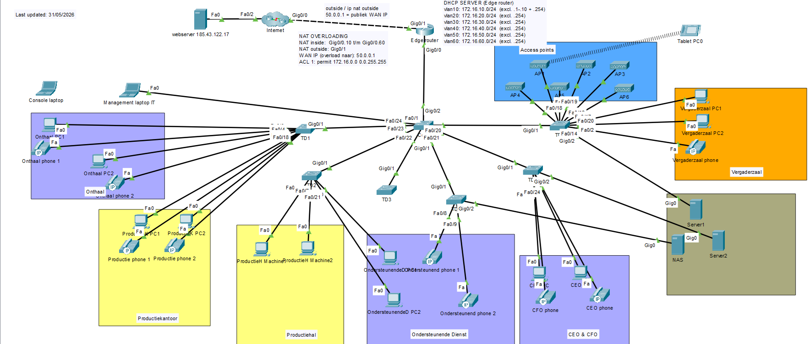

opdracht Topdesign Routering & Switching

Situatie
De firma Topdesign had al een netwerk met meerdere switches, VLAN's en een router-on-a-stick-configuratie, waarin de basis switching al klaarstond. Mijn opdracht was dit netwerk in Packet Tracer verder uit te bouwen: de endpoints automatisch een adres laten krijgen, de interne toestellen toegang geven tot het internet en het verkeer beperken met toegangslijsten (ACL's).
Aanpak
Ik werkte verder in het gegeven Packet Tracer-bestand en richtte de edge router in. Ik werkte in stappen:
- DHCP: van de edge router een DHCP-server gemaakt met een aparte pool per VLAN (vlan10 t/m vlan60). Adressen die al in gebruik zijn, zoals de servers, de NAS en de routerinterface, sloot ik uit de pool uit. Naast het IP-adres gaf ik ook de standaardgateway mee.
- Endpoints controleren: alle pc's op dynamisch gezet en nagegaan of ze een adres uit de juiste pool krijgen, ook de wifi-tablet en de IP-telefoons.
- NAT overloading: alle interne adressen (172.16.x.x) vertaald naar het publieke WAN-adres van de router. Hiervoor gebruikte ik ACL 1 met een wildcardmasker, de subinterfaces als inside en de WAN-interface als outside.
- Toegang tot beheer: een standard ACL 20 met host statements, zodat SSH-toegang enkel mogelijk is vanaf de management laptop, afgesloten met een expliciete deny any om statistieken te zien.
- Wifi en vergaderzaal afschermen: een named ACL (secure_from_40_60) met wildcardmasker die verkeer van VLAN 40 en 60 enkel naar buiten toelaat, en al het andere verkeer doorlaat. Ik koppelde ze aan de juiste subinterfaces, dicht bij de bron.
- Testen en documenteren: alles getest met een testplan en in simulatiemode gezocht naar waarom iets lukte of niet lukte, en commentaar toegevoegd aan de topologie.
Resultaat
Het netwerk van Topdesign configureert zijn endpoints nu automatisch, heeft toegang tot het internet en is beveiligd volgens de eisen.
- Alle endpoints krijgen automatisch een adres met gateway uit de pool van hun eigen VLAN.
- Alle interne VLAN's kunnen online via één publiek adres, dankzij NAT overloading.
- De hosts op het wifi-netwerk en in de vergaderzaal kunnen enkel surfen en bereiken de interne bedrijfsmiddelen niet.
- Het beheer van de switches is beperkt tot de management laptop.
- In mijn testplan staat wat wel en niet lukt, met een verklaring voor elk resultaat.